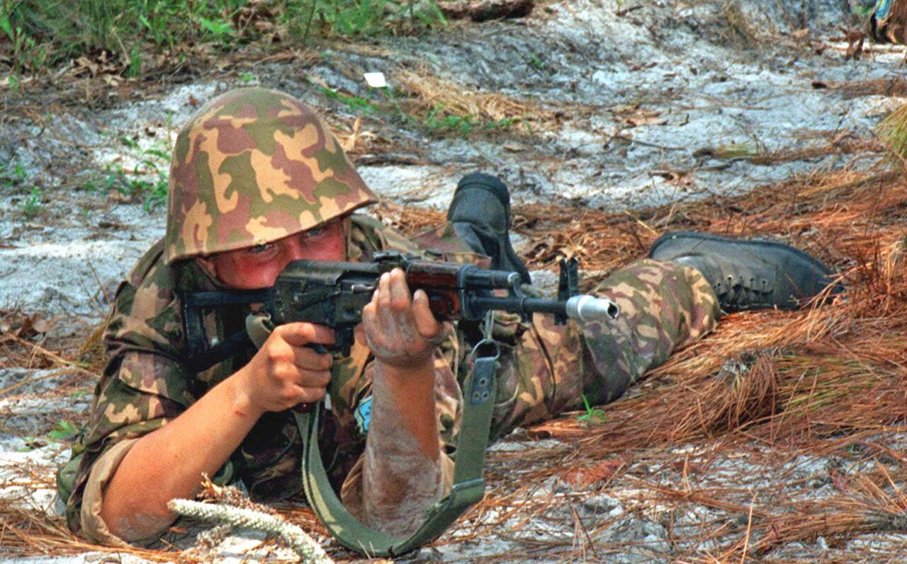

Атыс дайындығы Firearms Training Огневая подготовка
Дәл ату қадамдары: изготовка, прицелдеу, тыныс алу, спуск, атудан кейін. Steps to an accurate shot: stance, aiming, breathing, trigger, follow-through. Шаги меткого выстрела: изготовка, прицеливание, дыхание, спуск, после выстрела.

Дәл атыс — кездейсоқ емес, машықтанып игерілген дағды. Ол төрт элементтен құралады: изготовка (атуға қалыптасу), прицелдеу, тыныс алуды басқару және шүріппені біркелкі түсіру. Осы төрт элементті үнемі бір ізділікпен әрі дұрыс орындау оқтың нысанаға дәл тиюін қамтамасыз етеді. Кез келген элементтегі қате — мүлт кетуге апарады. Accurate fire is not luck but a trained skill. It is built from four elements: the firing stance, aiming, breath control and a smooth trigger press. Performing these four elements consistently and correctly is what places the round on target. An error in any one of them leads to a miss. Меткий выстрел — не случайность, а отработанный навык. Он складывается из четырёх элементов: изготовка, прицеливание, управление дыханием и плавный спуск курка. Стабильное и правильное выполнение этих четырёх элементов и обеспечивает попадание в цель. Ошибка в любом из них ведёт к промаху.
| ҚалыпPositionПоложение | ТұрақтылығыStabilityУстойчивость | ҚолданылуыUseПрименение |
|---|---|---|
| ЖатыпProneЛёжа | Ең жоғарыHighestНаивысшая | Алыс нысаналарға, дәл атысқаFor distant targets and precision fireДля дальних целей и точной стрельбы |
| Окоптан (тіреуішпен)From a trench (on a rest)Из окопа (с упора) | ЖоғарыHighВысокая | Тұрақты әрі қорғалған; қорғаныс ұрысындаStable and protected; in defenceУстойчиво и под защитой; в обороне |
| ТізерлепKneelingС колена | ОрташаMediumСредняя | Жылдамдық пен тұрақтылықтың ортасыBalance of speed and stabilityБаланс скорости и устойчивости |
| ТұрыпStandingСтоя | Ең төменLowestНаименьшая | Жақын аралықта тез ату; қозғалыстаQuick fire at close range; on the moveБыстро на близкой дистанции; в движении |
Жалпы ереже: дене салмағын тіреуішке бер, шынтақтарды тіре, дүмбіні иық шұңқырына тығыз қой, дене мен қаруды табиғи бағытта ұста. General rule: settle your weight onto the support, plant the elbows, seat the buttstock firmly in the shoulder pocket, and keep a natural point of aim. Общее правило: перенеси вес на опору, поставь локти, плотно вложи приклад в плечевую впадину, удерживай естественную наводку.
Атар алдында жартылай дем шығарып, тынысты табиғи кідіріс кезінде 2–3 секундқа ұста — дәл осы сәтте шүріппені түсір. Тынысты 8–10 секундтан артық ұстама: бұлшықет дірілдеп, көру нашарлайды. Before the shot, exhale partially and hold your breath at the natural pause for 2–3 seconds — press the trigger during this pause. Do not hold the breath longer than 8–10 seconds: the muscles begin to tremble and vision degrades. Перед выстрелом сделай неполный выдох и задержи дыхание на естественной паузе на 2–3 секунды — именно в неё нажимай спуск. Не задерживай дыхание дольше 8–10 секунд: мышцы начинают дрожать, а зрение ухудшается.
Көрсеткіш саусақтың бірінші фалангасының жастықшасымен ілмекті біркелкі әрі баяу бас — қаруды аудармай, жұлқымай. Атыс сен үшін «күтпеген» болуы тиіс: дәл осы кезде мушканың тұрақтылығы сақталады. Press the trigger smoothly and steadily with the pad of the index finger's first joint — without canting the rifle or jerking. The shot should come as a "surprise" to you: that is what preserves the steadiness of the front post. Нажимай на спуск плавно и равномерно подушечкой первой фаланги указательного пальца — не сваливая оружие и не дёргая. Выстрел должен стать для тебя «неожиданным»: именно это сохраняет устойчивость мушки.
| ҚатеErrorОшибка | НәтижесіResultРезультат |
|---|---|
| Шүріппені жұлқуJerking the triggerДёрганье спуска | Тию нүктесі төмен-солға кетеді — мүлтImpact thrown low and left — a missСнос точки попадания влево-вниз — промах |
| Қаруды аудару (свал)Canting the rifleСваливание оружия | Тию нүктесі бүйірге жылжиды, қашықтыққа артадыImpact shifts sideways, growing with rangeСмещение в сторону, растущее с дальностью |
| Тегіс емес немесе ірі/ұсақ мушкаUneven or fine/coarse front postНеровная или мелкая/крупная мушка | Тию биіктігі ауысадыElevation of impact changesИзменяется высота попадания |
| Тынысты дұрыс ұстамауImproper breath-holdingНеправильная задержка дыхания | Мушка тербеледі, дәлдік төмендейдіFront post wavers, accuracy dropsМушка колеблется, точность падает |
| Атар сәтте көзді жұму немесе иықты тартуBlinking or flinching at the shotМоргание или дёргание плечом при выстреле | Бақылау жоғалады, тұрақты мүлт кетуLoss of control, consistent missesПотеря контроля, устойчивые промахи |